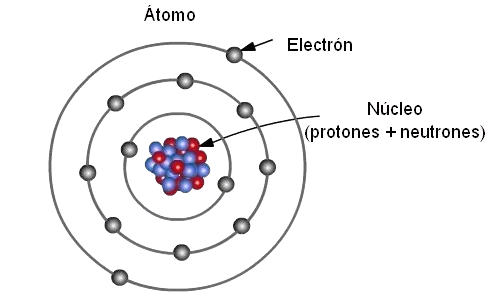
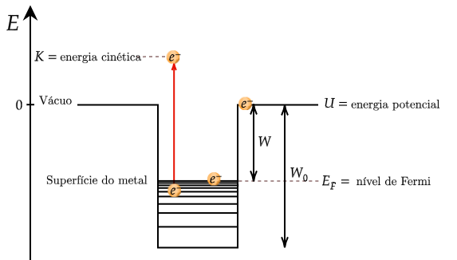
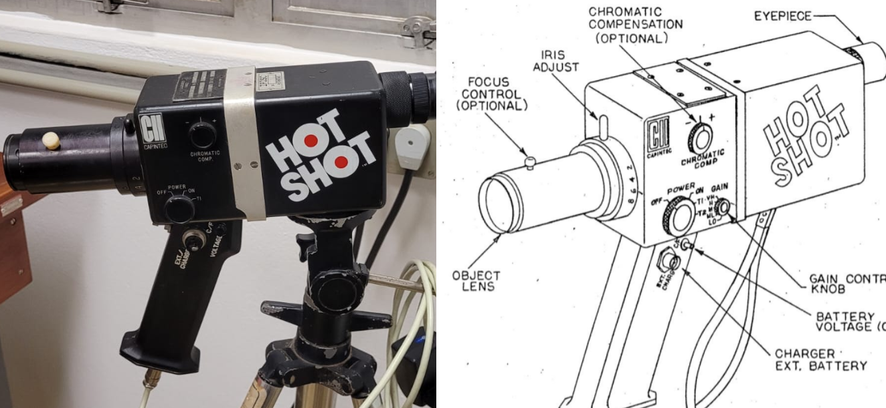
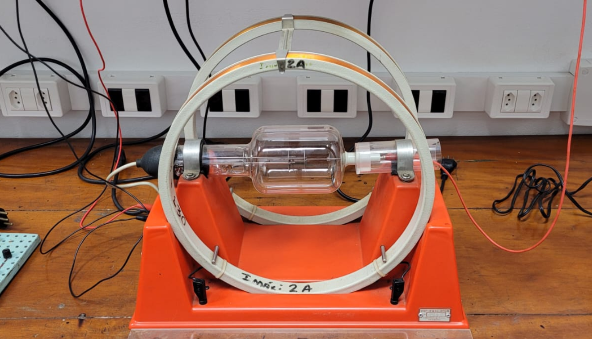
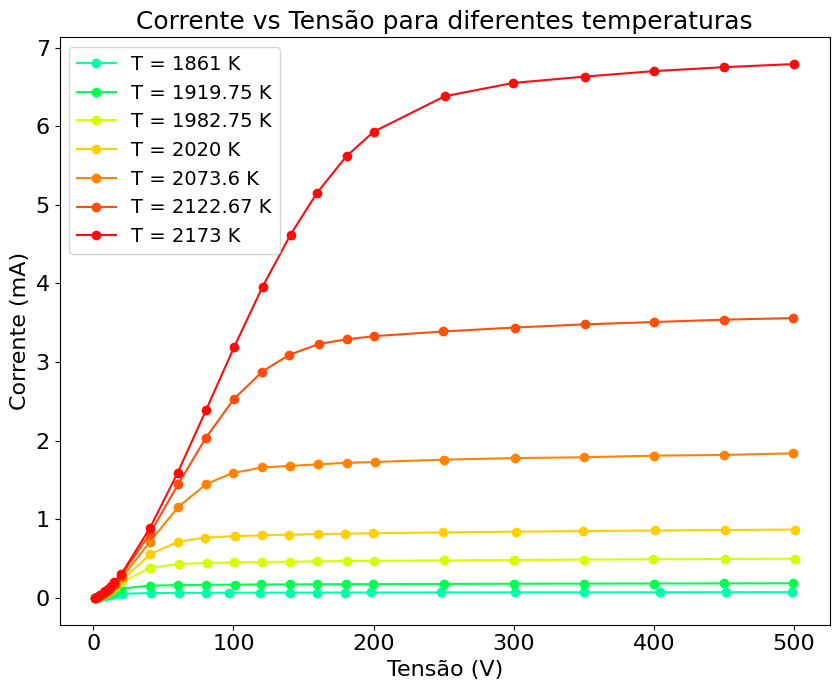
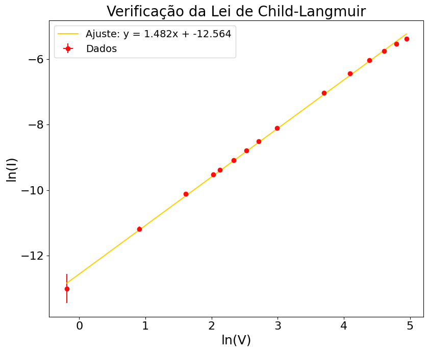
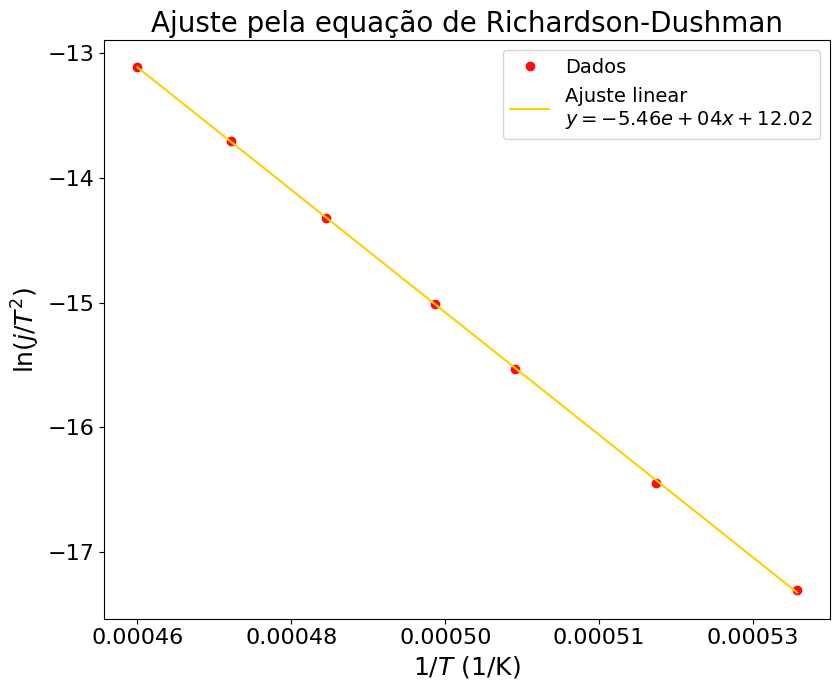
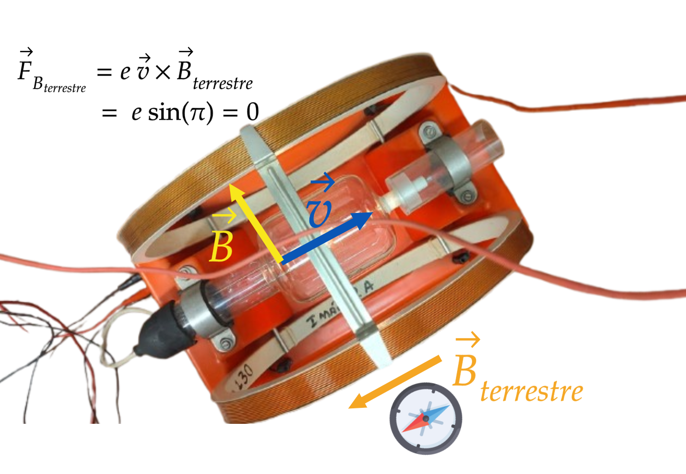
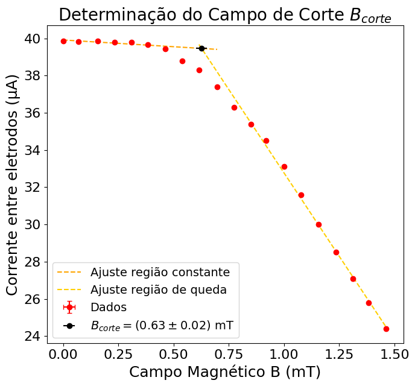

Emissão Termiônica
A emissão termiônica é o processo pelo qual elétrons são liberados de um metal aquecido. Este fenômeno está na base de dispositivos como válvulas termiônicas e tubos de raios catódicos.
A emissão termiônica é o processo pelo qual elétrons são liberados de um metal aquecido. Este fenômeno está na base de dispositivos como válvulas termiônicas e tubos de raios catódicos.
A emissão termiônica é um fenômeno fundamental da física moderna, com impacto em tecnologias eletrônicas, geração de energia e ciência dos materiais. A seguir, destacamos alguns marcos históricos importantes.
Owen Willans Richardson investigou a emissão de elétrons por metais aquecidos. Em 1901, publicou a fórmula exponencial que descreve a densidade de corrente emitida termicamente (lei de Richardson). Ganhou o Nobel em 1928.
Thomas Edison observou que um filamento incandescente emitia corrente em presença de um eletrodo auxiliar: o primeiro indício experimental da emissão termiônica.
John Ambrose Fleming usou a emissão termiônica no primeiro diodo termiônico, base para a eletrônica moderna. A válvula permitia corrente em um só sentido.
Descreve o regime de saturação da corrente termiônica limitada pelo espaço de carga, importante para prever o comportamento de tubos eletrônicos.
A emissão termiônica possibilitou a construção de triodos e válvulas amplificadoras, revolucionando as telecomunicações e o rádio.
Magnetrons com cátodos termiônicos foram essenciais para radares durante a Segunda Guerra Mundial. Hoje, são usados em fornos de micro-ondas, onde elétrons emitidos termicamente geram ondas eletromagnéticas.
Válvulas termiônicas dominaram TVs, transmissores, computadores e radares até a invenção do transistor nos anos 1950.
Os eletrodos aquecidos de lâmpadas fluorescentes emitem elétrons por emissão termiônica. Eles ionizam o gás interno e produzem luz UV, convertida em luz visível pelo pó fluorescente.
Geradores termoelétricos espaciais (RTGs) usam fontes radioativas para gerar calor e provocar emissão termiônica, alimentando sondas espaciais como a Voyager e a Curiosity.
Fontes de emissão termiônica ainda são comuns em microscópios eletrônicos de varredura (MEV), onde fornecem feixes estáveis de elétrons.
Aceleradores como o Sirius usam fontes de elétrons baseadas em emissão termiônica para gerar feixes de partículas de alta energia, fundamentais para experimentos em física de partículas e materiais.
Dentro de um metal, os átomos estão organizados com um núcleo no centro e elétrons em volta. Mas os elétrons mais externos não estão presos rigidamente aos seus núcleos: eles se movem livremente entre os átomos.
Isso acontece por causa de um fenômeno chamado efeito de blindagem — os elétrons mais internos "bloqueiam" a força do núcleo, deixando os elétrons externos mais livres. A energia necessária para tirar um elétron completamente do metal é chamada de função trabalho. Já a energia de Fermi é como o “nível máximo” de energia que esses elétrons livres normalmente têm, quando o metal está frio.
Quando aquecemos o metal, alguns desses elétrons ganham energia suficiente para escapar da superfície. Esse fenômeno é chamado de efeito termiônico, e é mais fácil de acontecer em metais com função trabalho menor. É assim que o metal passa a emitir elétrons quando está quente.
.png)
.png)
Para fazermos os experimentos dessa prática, usamos um circuito eletrônico que nos permite independentemente aumentarmos a temperatura em um filamento de tungstênio e também aplicarmos uma voltagem externa que coleta os elétrons. Ao medirmos a corrente cátodo-ânodo, medimos quantos elétrons estão sendo emitidos pelo filamento. Usamos também um pirômetro óptico para medirmos a temperatura do filamento, bem como um par de bobinas de Helmholtz para aplicarmos um campo magnético na região do filamento.
Pirômetro:
Bobinas de Helmholtz com a Válvula Termiônica:
 Por fim, utilizamos um gerador de áudio como fonte para um sinal de tensão variávelAo aplicarmos uma tensão externa, lentamente vamos nos livrando da carga espacial e aumentando a coleta de elétrons. Durante esse processo, a corrente entre as placas varia de acordo com a lei de Child-Langmuir.
Onde:
Ao atingirmos uma tensão externa grande o suficiente, passamos a coletar todos os elétrons que o filamento emite, o que significa que não importa o quanto mais aumentemos a tensão, a corrente permanece a mesma — atingimos a corrente de saturação.
Verificamos esse efeito para várias temperaturas do filamento:  Na verificação da potência 3/2 da Lei de Child-Langmuir, obtivemos o seguinte: Quando estivermos no regime de saturação, todos os elétrons serão coletados, o que implica que agora a corrente entre as placas não depende mais da tensão externa que aplicamos mas sim puramente da quantidade de elétrons que o material é capaz de emitir.
Essa “capacidade de emitir elétrons” é descrita pela lei de Richardson-Dushman, que nos diz que a corrente entre as placas depende da temperatura do filamento de metal e de sua função trabalho.
Onde:
Obtivemos o seguinte gráfico:
que nos permitiu calcular a função trabalho do metal W = 4.7061 ± 0.0163 eV, dentro do esperado.
Um efeito interessante (e muito útil) que ocorre em circuitos desse tipo é o que chamamos de retificação: só haverá corrente se o potencial externo for orientado de tal forma que os elétrons sejam coletados pelo ânodo, do contrário a corrente será nula. Além disso, a corrente retificada aumenta com o aumento da temperatura (óbvio: mais elétrons emitidos = mais corrente!).
Outro aspecto interessante a ser explorado nesse experimento ocorre quando aplicamos um campo magnético à “região de voo” dos elétrons.
Sabemos que quando uma partícula carregada viaja em uma região com campo magnético, ela sofre uma força perpendicular ao movimento, o que faz com que a mesma descreva uma trajetória circular.
Podemos calcular o valor do raio dessa trajetória e, caso esse raio seja menor que a distância entre as placas, vemos uma diminuição na corrente (claro, se R < d, os elétrons não conseguem atingir o ânodo!). Determinando o valor do campo magnético onde ocorre essa diminuição, temos uma estimativa da razão carga/massa dos elétrons.
 Obtivemos e/m = (1,272e+11 ± 0,12) ×10 11C/kg, enquanto o esperado era 1,758820×10 11 C/kg
Este site foi desenvolvido por Maria Vitória Lima da Silva e Nathan Mayer Hunhoff como parte das atividades no Laboratório Avançado de Física I.
O LAVFIS – Laboratório Avançado de Física I é um espaço didático e experimental do Instituto de Física de São Carlos (IFSC-USP), onde os alunos têm a oportunidade de aprofundar seus conhecimentos em física experimental com projetos aplicados.
Para saber mais sobre o laboratório, acesse: https://www.ifsc.usp.br/lavfis/
Para conhecer o IFSC como um todo, acesse a página institucional: https://www2.ifsc.usp.br/portal-ifsc/